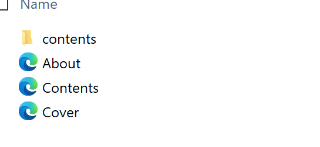
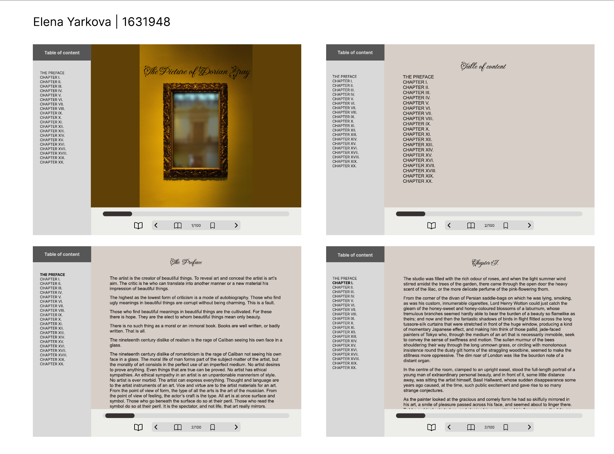

Process journal of The Picture of Dorian Gray
Week 1
I chose The Portrait of Dorian Gray by Oscar Wilde because it is a classic novel with intriguing philosophical themes and elements of horror. The genre of the book is fiction, especially Gothic and philosophical, which can affect the design of a website, requiring a darker and more atmospheric design. The book has several interesting features, such as the changing portrait of Dorian Gray himself, but there may be difficulties with animation. The book is not large, only 20 chapters, there should be no difficulties.
Week 2
Critique session 1. Find a suitable E-book user interface to be inspired by.
Week 3
Designed the website's layout using sketches. Gathered images and resources for the project. Started building the basic HTML structure of the website.
Week 4
Critique session 2. Finalised sketches and navigation plan of the website. Started experimenting with cover image variants.
Week 5
Initially, I chose the cover from the Unsplash stock, on which the title of the book and the author were already indicated, at the critic session I received a good review about the frame design of the site and a recommendation to replace the image without inscriptions. There was also a tip to add the author's photo to the "About page" section. Started writing the CSS styles for the website. Started working on the "Table of Contents" and "About the Book" pages.

Changed to:
Week 6
Critique session 3. Published a PDF file with page layout sketches, screenshots of pages, and selected typography. Evidence that I started logging the process, a screenshot of an external CSS file. Structured files and folders, shortened their names.



I imported an italic font from google fonts Flear de leah - I find it very suitable for the headings because it reminds me of the Art Nouveau style, which was just at the height of its popularity at the same time as the events in the book take place. For the main text and headings I chose Arial font because it is easy to read without straining the reader's eyes. Colour palette for the site I selected on the service Adobe colour, choosing the monochromatic option. The idea was to create a visual effect of an old book with yellowed pages.
Teaching recess
I created the website's structure, established page-to-page connections using links, incorporated extra links into the About page, and included an image along with the book's title and author on the homepage
Week 7
Creating a grid for the website using online tool Layoutit and alignment of elements

Week 8
Added a lang attribute to the html start tag to declare the language of this document throughout all the pages.
Week 9
Critique session 4. Came up with several ideas for animation implementation. Started researching how to implement a reading progress bar.

Week 10
Watched Youtube tutorial how to build reading progress bar.
Implemented it on my web page
Found event timeline code with animation on Stack Overflow.
Copied code and started changing it to make it more interactive, when pressed, Dorian's scary portrait will begin to manifest through the young portrait
Both Dorian portraits created by Generative AI - OpenArt
Week 11
Critique session 5.
Continued working on timeline animation. Debugged and fixed some issues with the reading progress bar and timeline animations.
Week 12
Started working on map animation, decided to use provided animation on map, but a little bit modify it.
When trying to make the map animation below the portraits I ran into the problem that the markers were showing up on the portraits, so I decided to make the map above the portraits. Also I couldn't make the portraits adaptive, because otherwise I can't make them overlap. I used the animation of the map and modified it by removing the button, but using the click on the 6th and 13th elements of the list.
Study week
Debugging and fixing code with HTML validator and CSS validator. Break the code into groups and commented all the necessary parts.
CSS validator shows me some errors in my code, but this part of code connected with animation and works well
Checked all the links throughout the pages that they work correctly.
Documented all the work that I have done.
Comparison and conclusion
I ended up with a very similar design to the original one, because I already knew what I could do and didn't plan any complicated elements.
Original:
Final:
I gave up the idea of making a separate section at the bottom and a horizontal navigation bar because I encountered difficulties in implementation. So instead I decided to make a top progress bar, and leave just the forward and back buttons at the bottom. At the same time, navigation is also present on the left side in the form of a menu.
Also after I applied grids to the site I found it much easier to work with the content and understood where an element would be located, within what area.
And the main difficulties I had with animation. I had to watch many tutorials on youtube, rework found pieces of code and connect them together to make the animation work as I would like.
External Resource Table
| URL/Source and Attribution | How it was used |
|---|---|
|
Stack OverFlow Changing opacity animation Changing the opacity transparency of images How to increase opacity in JS Change opacity on click |
Used this code for portraits opacity animation, but a bit modified |
| Stack OverFlow Timeline animation | Used this code for timeline animation, but a bit modified, removed the delay part and added on click event |
| Provided MAP animation from Week 11 COMPX161 | I used code from this animation and modified it for my visualisation, I removed button and made onclick event on 6, 13 list positions. |
| OpenArt AI | Used to create portrait images of Young and Old Dorian |
| Adobe color | Used to create monochromatic colour scheme |
| Layoutit | Used to create grids for the website |
| Unsplash | Used as a sourse for the cover image |
| Unsplash | Used as a sourse for the map image |
| The Noun Project | Used as a sourse for icons |
| Oscar Wilde Wikipedia page | Used as a sourse for Oscar Wilde portrait |
|
How to build a reading progress bar How to build a reading progress bar - Youtube video |
Used as a sourse for progress bar animation |
| Fleur De Leah - Google fonts | Used as a font for main headings |